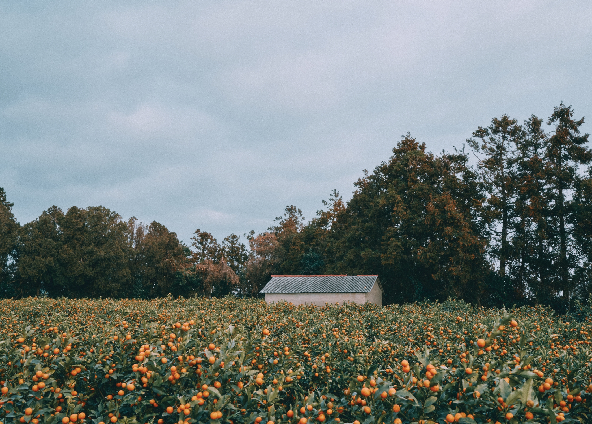
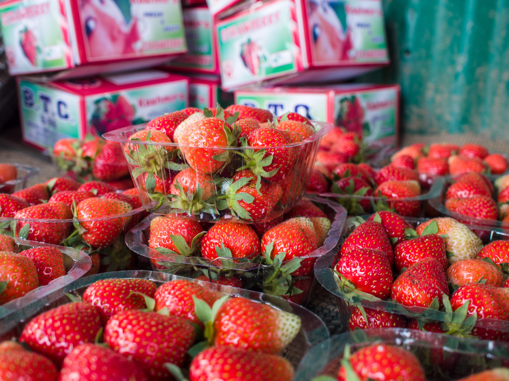
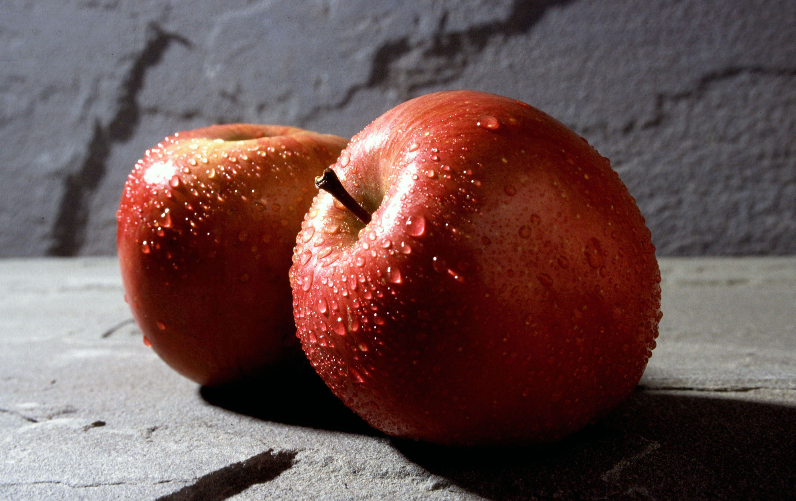

<style>
.devlog-rich,
.devlog-rich * {
  box-sizing: border-box;
}

/* v2: source-frozen article surface validated by one final light/dark gate. */
.devlog-rich {
  --rich-canvas: 980px;
  --rich-reading: 760px;
  --rich-surface: #ffffff;
  --rich-image-surface: #f5f5f7;
  --rich-text: #1d1d1f;
  --rich-body: #333333;
  --rich-muted: #636366;
  --rich-link: #0066cc;
  --rich-border: #e0e0e0;
  --rich-alt: #f5f5f7;
  --rich-code-bg: #f0f0f0;
  --rich-code-text: #333333;
  --rich-pre-bg: #f6f6f6;
  width: min(100%, var(--rich-canvas));
  margin: 0 auto;
  background: var(--rich-surface);
  color: var(--rich-text);
  font-family: "Noto Sans KR", "Apple SD Gothic Neo", system-ui, -apple-system,
    BlinkMacSystemFont, sans-serif;
  line-height: 1.47;
}

/* hELLO 스킨의 다크모드(html.dark) 대응 */
.dark .devlog-rich {
  --rich-surface: #1e1f21;
  --rich-image-surface: #f5f5f7;
  --rich-text: #f5f5f7;
  --rich-body: #d1d1d6;
  --rich-muted: #a1a1aa;
  --rich-link: #66b3ff;
  --rich-border: #3a3a3c;
  --rich-alt: #2a2b2e;
  --rich-code-bg: #333438;
  --rich-code-text: #f5f5f7;
  --rich-pre-bg: #252629;
}

.devlog-rich a {
  color: var(--rich-link);
  overflow-wrap: anywhere;
  text-decoration: none;
}

.devlog-rich a:hover {
  text-decoration: underline;
}

/* Native benchmark figures retain readable labels in both publication themes. */
.devlog-rich__benchmark {
  width: min(100%, var(--rich-reading));
  margin: 32px auto;
  padding: 24px 20px;
  border: 1px solid var(--rich-border);
  border-radius: 14px;
  background: var(--rich-surface);
  color: var(--rich-body);
}
.devlog-rich__benchmark-title {
  margin: 0 0 8px;
  font-size: 18px;
  font-weight: 700;
  color: var(--rich-text);
  word-break: keep-all;
  overflow-wrap: anywhere;
}
.devlog-rich__benchmark-axis,
.devlog-rich__benchmark-cost {
  margin: 6px 0 0;
  font-size: 13px;
  color: var(--rich-muted);
}
.devlog-rich__benchmark-group { margin: 24px 0; }
.devlog-rich__benchmark-group-title {
  margin: 0 0 16px;
  font-size: 15px;
  font-weight: 700;
}
.devlog-rich__benchmark-row { margin: 0 0 16px; }
.devlog-rich__benchmark-label {
  display: flex;
  justify-content: space-between;
  align-items: baseline;
  gap: 12px;
  font-size: 14px;
}
.devlog-rich__benchmark-label strong { flex-shrink: 0; }
.devlog-rich__benchmark-track {
  height: 12px;
  margin-top: 8px;
  overflow: hidden;
  border-radius: 3px;
  background: var(--rich-border);
}
.devlog-rich__benchmark-track > span { display: block; height: 100%; }
.devlog-rich__benchmark-track .is-sol { background: #c18a20; }
.devlog-rich__benchmark-track .is-opus { background: #426be0; }
.devlog-rich__benchmark-track .is-astra { background: #9365cf; }
.devlog-rich__benchmark-track .is-neutral { background: #85858e; }
.devlog-rich__benchmark > .devlog-rich__caption { margin-bottom: 0; }

.devlog-rich__section {
  padding: 56px 32px;
  background: var(--rich-surface);
}

.devlog-rich__section.is-alt {
  background: var(--rich-alt);
}

.devlog-rich__section.is-intro {
  padding-top: 72px;
  padding-bottom: 48px;
}

.devlog-rich__section.is-toc {
  padding-top: 28px;
  padding-bottom: 40px;
}

.devlog-rich__section > p,
.devlog-rich__section > h2,
.devlog-rich__section > h3,
.devlog-rich__section > h4,
.devlog-rich__section > ul,
.devlog-rich__section > ol,
.devlog-rich__section > blockquote,
.devlog-rich__section > .rich-table-wrap,
.devlog-rich__toc {
  width: min(100%, var(--rich-reading));
  margin-left: auto;
  margin-right: auto;
}

/* Markdown conversion puts a margin directly on <pre>. Override only code
   blocks so their left and right edges follow the reading column in Tistory. */
.devlog-rich__section > pre {
  width: min(100%, var(--rich-reading)) !important;
  margin-left: auto !important;
  margin-right: auto !important;
}

.devlog-rich__section > h2 {
  margin-top: 0;
  margin-bottom: 18px;
  color: var(--rich-text);
  font-size: 34px;
  font-weight: 700;
  letter-spacing: -0.02em;
  line-height: 1.25;
  word-break: keep-all;
  scroll-margin-top: 24px;
}

.devlog-rich__section > h3,
.devlog-rich__section > h4 {
  color: var(--rich-text);
  font-weight: 700;
  line-height: 1.35;
  word-break: keep-all;
}

.devlog-rich__section > p {
  margin-top: 0;
  margin-bottom: 1.15em;
  color: var(--rich-body);
  font-size: 17px;
  letter-spacing: -0.018em;
  line-height: 1.72;
  word-break: keep-all;
  overflow-wrap: anywhere;
}

.devlog-rich__section > ul,
.devlog-rich__section > ol {
  color: var(--rich-body);
  font-size: 17px;
  line-height: 1.72;
  overflow-wrap: anywhere;
}

/* Tistory skins often reset list markers globally. Restore them inside the
   rich fragment so Markdown bullets remain visible after HTML paste. */
.devlog-rich__section > ul {
  list-style: disc outside !important;
  padding-left: 1.45em !important;
}

.devlog-rich__section > ol,
.devlog-rich__toc ol {
  list-style: decimal outside !important;
  padding-left: 1.45em !important;
}

.devlog-rich__section > ul > li,
.devlog-rich__section > ol > li,
.devlog-rich__toc li {
  display: list-item !important;
}

.devlog-rich__section > ul > li + li,
.devlog-rich__section > ol > li + li {
  margin-top: 0.4em !important;
}

.devlog-rich__section > ul + p,
.devlog-rich__section > ol + p {
  margin-top: 1.15em !important;
}

.devlog-rich :not(pre) > code {
  background: var(--rich-code-bg);
  color: var(--rich-code-text);
  overflow-wrap: anywhere;
  word-break: break-word;
}

/* Markdown blockquotes are neutral quote/input boxes. No prompt labels are added. */
.devlog-rich .devlog-rich__section > blockquote {
  box-sizing: border-box !important;
  width: min(100%, var(--rich-reading)) !important;
  max-width: 100% !important;
  margin: 24px auto !important;
  padding: 18px 20px !important;
  border: 1px solid var(--rich-border) !important;
  border-left: 3px solid var(--rich-link) !important;
  border-radius: 12px !important;
  background: var(--rich-pre-bg) !important;
  color: var(--rich-body) !important;
  font-size: 17px !important;
  font-style: normal !important;
  line-height: 1.72 !important;
  text-align: left !important;
  white-space: normal !important;
  word-break: keep-all !important;
  overflow-wrap: anywhere !important;
}
@media (max-width: 735px) {
  .devlog-rich .devlog-rich__section > blockquote {
    padding: 16px !important;
  }
}

.devlog-rich__toc {
  padding: 24px 26px;
  border: 1px solid var(--rich-border);
  border-radius: 18px;
  background: var(--rich-surface);
}

.devlog-rich__toc-title {
  margin: 0 0 12px;
  color: var(--rich-muted);
  font-size: 14px;
  font-weight: 700;
}

.devlog-rich__toc ol {
  margin: 0;
  padding-left: 22px;
  font-size: 16px;
  line-height: 1.9;
}

.devlog-rich__figure {
  width: min(100%, var(--rich-media-width, 916px));
  margin: 36px auto;
}

.devlog-rich__image {
  display: block;
  width: 100%;
  height: auto;
  overflow: clip;
  border: 1px solid var(--rich-border);
  border-radius: 18px;
  background: var(--rich-image-surface);
}

.devlog-rich__media-scroll {
  width: 100%;
}
.devlog-rich__native-image.devlog-rich__image {
  border: 0;
  border-radius: 0;
  background: transparent;
}
.devlog-rich__native-image figure.imageblock {
  width: 100% !important;
  max-width: 100% !important;
  margin: 0 auto !important;
  transform: none !important;
}
.devlog-rich__native-image img {
  display: block;
  width: 100%;
  height: auto;
  border: 1px solid var(--rich-border);
  border-radius: 18px;
  background: var(--rich-image-surface);
}

.devlog-rich__poster {
  display: none;
}

.devlog-rich__caption {
  margin: 12px 0 0;
  padding-top: 10px;
  color: var(--rich-muted);
  font-size: 14px;
  line-height: 1.55;
}

.devlog-rich__credit {
  white-space: normal;
}

.devlog-rich .rich-table-wrap {
  margin-top: 28px;
  margin-bottom: 28px;
  overflow-x: auto;
  -webkit-overflow-scrolling: touch;
}

.devlog-rich .rich-table-wrap table {
  width: 100%;
  min-width: 620px;
  border-collapse: collapse;
  color: var(--rich-body);
  font-size: 15px;
  line-height: 1.6;
}

.devlog-rich .rich-table-wrap th,
.devlog-rich .rich-table-wrap td {
  padding: 11px 13px;
  border: 1px solid var(--rich-border);
  text-align: left;
  vertical-align: top;
  word-break: keep-all;
}

.devlog-rich .rich-table-wrap th {
  background: var(--rich-alt);
  color: var(--rich-text);
  font-weight: 700;
}

.devlog-rich pre {
  max-width: var(--rich-reading);
  overflow-x: auto;
  background: var(--rich-pre-bg);
  color: var(--rich-body);
}

/* Tistory/Markdown inline styles must not pin the article to light colors. */
.dark .devlog-rich a[style] {
  color: var(--rich-link) !important;
}

.dark .devlog-rich :not(pre) > code[style] {
  background: var(--rich-code-bg) !important;
  color: var(--rich-code-text) !important;
}

.dark .devlog-rich pre[style] {
  background: var(--rich-pre-bg) !important;
  border-color: var(--rich-border) !important;
  color: var(--rich-body) !important;
}

@media (prefers-reduced-motion: reduce) {
  .devlog-rich__motion {
    display: none;
  }

  .devlog-rich__poster {
    display: block;
  }
}

@media (max-width: 735px) {
  .devlog-rich {
    width: 100%;
    border-radius: 0;
  }

  .devlog-rich__section,
  .devlog-rich__section.is-intro {
    padding: 48px 20px;
  }

  .devlog-rich__section.is-toc {
    padding: 28px 20px 40px;
  }

  .devlog-rich__section > h2 {
    font-size: 30px;
    line-height: 1.25;
  }

  .devlog-rich__toc {
    padding: 20px;
  }

  .devlog-rich__figure {
    margin-top: 32px;
    margin-bottom: 32px;
  }

  .devlog-rich__figure--scroll-mobile .devlog-rich__media-scroll {
    overflow-x: auto;
    overscroll-behavior-inline: contain;
    -webkit-overflow-scrolling: touch;
  }

  .devlog-rich__figure--scroll-mobile .devlog-rich__image {
    width: var(--rich-mobile-scroll-width, 720px);
    max-width: none;
  }
}

/* The compact shopping table must show all three columns on a 360px screen. */
.devlog-rich .rich-table-wrap table {
  min-width: 0;
  table-layout: fixed;
}
.devlog-rich .rich-table-wrap :is(th, td):first-child {
  width: 18%;
  font-weight: 700;
  white-space: nowrap;
}
.devlog-rich .rich-table-wrap :is(th, td) {
  overflow-wrap: anywhere;
}
@media (max-width: 480px) {
  .devlog-rich .rich-table-wrap :is(th, td) {
    padding: 9px 8px;
  }
}

</style>
<article class="devlog-rich">
<section class="devlog-rich__section is-intro">
<p data-ke-size="size16">안녕하세요. dev.log입니다.</p>
<p data-ke-size="size16">12월은 제주 노지감귤과 국산 딸기를 함께 만날 수 있는 달입니다. 제주에서는 조생감귤 수확이 12월까지 이어집니다. 예전엔 늦봄에 주로 먹던 딸기도 지금은 온실에서 길러 겨울에 출하합니다. <a style="color: #1a73e8; text-decoration: none;" href="https://dop3n.tistory.com/entry/11%EC%9B%94-%EC%A0%9C%EC%B2%A0%EA%B3%BC%EC%9D%BC-%EB%AD%98-%EB%A8%B9%EC%9D%84%EA%B9%8C">부사 사과</a>는 늦가을에 거둬 저장해 둔 것이 12월에도 매장에 나옵니다.</p>
</section>
<section class="devlog-rich__section is-toc"><nav class="devlog-rich__toc" aria-label="글 목차">
<p class="devlog-rich__toc-title" data-ke-size="size16">목차</p>
<ol style="list-style-type: decimal;">
<li><a href="#장보기-전에-보는-12월-과일-표">장보기 전에 보는 12월 과일 표</a></li>
<li><a href="#귤-한-봉지-제주-노지-조생감귤">귤 한 봉지, 제주 노지 조생감귤</a></li>
<li><a href="#딸기-한-팩-위보다-아래부터">딸기 한 팩, 위보다 아래부터</a></li>
<li><a href="#부사-몇-알-아침에-꺼내-먹을-사과">부사 몇 알, 아침에 꺼내 먹을 사과</a></li>
</ol>
</nav></section>
<section class="devlog-rich__section" aria-labelledby="장보기-전에-보는-12월-과일-표">
<h2 id="장보기-전에-보는-12월-과일-표" data-ke-size="size26">장보기 전에 보는 12월 과일 표</h2>
<div class="rich-table-wrap">
<table>
<thead>
<tr>
<th>과일</th>
<th>매장에서</th>
<th>집에 와서</th>
</tr>
</thead>
<tbody>
<tr>
<td>귤</td>
<td>비슷한 크기라면 묵직한 것</td>
<td>상자 바닥을 확인하고 냉장</td>
</tr>
<tr>
<td>딸기</td>
<td>팩 아래 눌린 열매와 고인 즙 확인</td>
<td>먹기 직전에 씻기</td>
</tr>
<tr>
<td>부사</td>
<td>멍 없이 단단한 것</td>
<td>다른 과일과 나눠 냉장</td>
</tr>
</tbody>
</table>
</div>
</section>
<section class="devlog-rich__section is-alt" aria-labelledby="귤-한-봉지-제주-노지-조생감귤">
<h2 id="귤-한-봉지-제주-노지-조생감귤" data-ke-size="size26">귤 한 봉지, 제주 노지 조생감귤</h2>
<div class="devlog-rich__figure" style="--rich-media-width: 640px;" data-media-id="jeju-orchard">
<div class="devlog-rich__native-image devlog-rich__image"><figure class="imageblock alignCenter"><span></span></figure>
</div>
<p class="devlog-rich__caption" data-ke-size="size16">제주올레 7코스 감귤밭.</p>
</div>
<p data-ke-size="size16"><a style="color: #1a73e8; text-decoration: none;" href="https://commons.wikimedia.org/wiki/File:Jejuolle-route-07%284%29.jpg">사진: Jeju Olle Foundation</a> · <a style="color: #1a73e8; text-decoration: none;" href="https://creativecommons.org/licenses/by-sa/4.0/">CC BY-SA 4.0</a></p>
<p data-ke-size="size16">‘노지’는 온실이 아닌 밭에서 기르는 재배 방식을 뜻합니다. ‘조생’은 보통 온주밀감보다 일찍 익는 계통을 가리킵니다. <a style="color: #1a73e8; text-decoration: none;" href="https://agri.jeju.go.kr/agri/communication/hardship.htm?act=view&amp;page=5&amp;seq=44790">제주특별자치도 농업기술원</a>에 따르면 제주 노지 조생감귤은 보통 11월 중순부터 12월까지 수확합니다. 12월에 평소 까먹던 귤을 찾는다면 포장에서 ‘제주 노지감귤’ 표시를 먼저 보세요.</p>
<p data-ke-size="size16">낱개로 살 때는 <a style="color: #1a73e8; text-decoration: none;" href="https://www.mafra.go.kr/bbs/mafra/72/239843/download.do">껍질이 얇고 묵직한 귤</a>을 고르세요. 크기가 비슷한 두 알을 들어 보면 무게를 비교하기 쉽습니다. 상자로 샀다면 처음부터 상자 바닥까지 살펴보세요. <a style="color: #1a73e8; text-decoration: none;" href="https://www.korea.kr/multi/visualNewsView.do?newsId=148923515">식품의약품안전처의 보관 안내</a>에 따라 곰팡이 핀 귤은 버리고, 남은 귤은 씻어 물기를 닦은 뒤 키친타월을 깐 용기에 간격을 두고 담아 냉장하세요.</p>
</section>
<section class="devlog-rich__section" aria-labelledby="딸기-한-팩-위보다-아래부터">
<h2 id="딸기-한-팩-위보다-아래부터" data-ke-size="size26">딸기 한 팩, 위보다 아래부터</h2>
<div class="devlog-rich__figure" style="--rich-media-width: 640px;" data-media-id="packed-strawberries">
<div class="devlog-rich__native-image devlog-rich__image"><figure class="imageblock alignCenter"><span></span></figure>
</div>
<p class="devlog-rich__caption" data-ke-size="size16">매대에서 만나는 딸기 포장.</p>
</div>
<p data-ke-size="size16"><a style="color: #1a73e8; text-decoration: none;" href="https://commons.wikimedia.org/wiki/File:Strawberries_packed_in_Punnets_%2814391808157%29.jpg">사진: Mike Prince</a> · <a style="color: #1a73e8; text-decoration: none;" href="https://creativecommons.org/licenses/by/2.0/">CC BY 2.0</a></p>
<p data-ke-size="size16">시설재배가 보급되면서 딸기는 겨울에도 나오기 시작했습니다. 품종 표시가 보이면 <a style="color: #1a73e8; text-decoration: none;" href="https://www.rda.go.kr/webzine/2020/02/sub1-2.html">농촌진흥청의 품종 소개</a>를 참고해 보세요. 과즙이 많은 딸기를 원하면 설향을, 겉이 단단한 딸기를 원하면 금실을 고르면 됩니다.</p>
<p data-ke-size="size16">팩을 들어 아래쪽부터 보세요. 위에서는 잘 안 보이는 눌린 열매나 바닥에 고인 즙을 확인할 수 있습니다. 그다음 <a style="color: #1a73e8; text-decoration: none;" href="https://www.rda.go.kr/middlePopOpenPopNongsaroDBView.do?no=1102">딸기 꽃받침이 푸르고 마르지 않았는지</a> 살펴보세요. 딸기는 무르기 쉬우니 저녁에 먹을 만큼만 흐르는 물에 가볍게 씻고, 나머지는 꼭지를 떼지 말고 냉장하세요.</p>
</section>
<section class="devlog-rich__section is-alt" aria-labelledby="부사-몇-알-아침에-꺼내-먹을-사과">
<h2 id="부사-몇-알-아침에-꺼내-먹을-사과" data-ke-size="size26">부사 몇 알, 아침에 꺼내 먹을 사과</h2>
<div class="devlog-rich__figure" style="--rich-media-width: 640px;" data-media-id="fuji-apples">
<div class="devlog-rich__native-image devlog-rich__image"><figure class="imageblock alignCenter"><span></span></figure>
</div>
<p class="devlog-rich__caption" data-ke-size="size16">부사라고도 부르는 후지 품종.</p>
</div>
<p data-ke-size="size16"><a style="color: #1a73e8; text-decoration: none;" href="https://commons.wikimedia.org/wiki/File:Fuji_apple.jpg">사진: Scott Bauer, USDA ARS</a> · 퍼블릭 도메인</p>
<p data-ke-size="size16">매대에 ‘부사’와 ‘후지’가 따로 적혀 있어도 같은 품종입니다. 둘 다 보이면 상처가 적고 단단한 쪽을 고르세요. <a style="color: #1a73e8; text-decoration: none;" href="https://m.korea.kr/briefing/actuallyView.do?newsId=148957919">농림축산식품부 자료</a>에 따르면 후지처럼 늦게 익는 사과는 10월 중순부터 11월 사이에 수확합니다. 이때 거둬 저장해 둔 사과는 겨울까지 출하합니다.</p>
<p data-ke-size="size16"><a style="color: #1a73e8; text-decoration: none;" href="https://www.rda.go.kr/board/board.do?dataNo=100000807561&amp;mode=view&amp;prgId=day_farmprmninfoEntry">농촌진흥청의 사과 고르는 법</a>에 따라 들었을 때 묵직하고 껍질에 멍이나 무른 자리가 없는 걸 고르세요. 냉장고에 넣을 때는 사과를 따로 담아 두세요. <a style="color: #1a73e8; text-decoration: none;" href="https://www.rda.go.kr/board/board.do?dataNo=100000813032&amp;mode=view&amp;prgId=day_farmprmninfoEntry">사과에서 나오는 에틸렌</a>이 함께 둔 과일이나 채소를 더 빨리 익히거나 시들게 할 수 있습니다.</p>
</section>
</article>